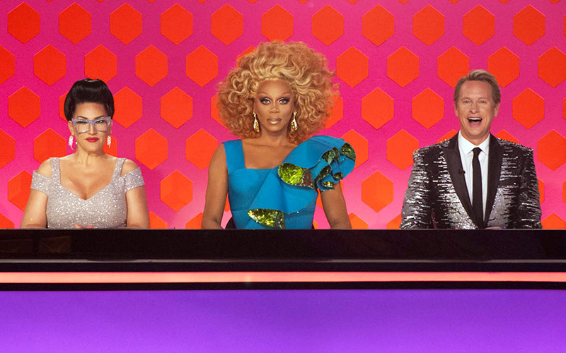

Drag Central
The Library is Open!
Talk To The Queens
Drag Queens all have different experiences and reasons for performing in Drag. For many it can be a form of self expression and for others it is a way to stay true to their inner selves. Whatever the reason may be, Drag Queens are some of the most talented men and women out there. Here is just one take on Drag life, as told by Ingenue.
Interview With Ingenue
Q: How long have you been doing drag here in LA? Why?
A: I started doing drag around 2002, just going to parties and being silly. Then a friend of a friend asked me to play my drag character and host one of his events. That was Memorial Day 2005. That was the day I began working professionally as a drag queen, and I have been working ever since. Why did I start doing drag? Even when I was very young, I always loved wearing women’s shoes. As an adult, I was like, “I can buy some that actually fit!” It started with a pair of very high, red pumps, and I’ve never looked back. So, yeah. It started with the shoes.
Q: What’s unique about the LA drag scene that differentiates it from drag anywhere else in the world?
A: Well, I haven’t been anywhere else in the world except here in the US, but drag is drag. It’s expensive. It’s nerve-wracking. It’s A LOT of work, but it’s also A LOT of fun. In LA/SoCal, we have a fairly tight drag community where girls take it seriously and do a damn fine job. Hence why so many have been on “RuPaul’s Drag Race” and have won! LA girls are also more well-rounded in my opinion. You may see a fabulous LA queen on the stage and then find out she won the Emmy for “Outstanding Makeup” for a daytime drama or she does RuPaul’s wigs. It’s true! I work with those girls. Every LA drag queen is more than just a pretty face.
Q: What advice do you have for any young queens trying to make it on their own like you did?
A: If you want to do drag, then do drag. Doll up the best you can and go party in the gay clubs. We all began there. Drag will always begin there. Get noticed that way, network, and have a blast! Once you feel a little more confident, do some amateur shows. There are a bazillion around SoCal. Ask around, and you’ll find them. That will give you the experience. In my day – said like an old lady, right? – there were very, very, very and I mean very few outlets for newbies. There were only two drag shows in WeHo and NO drag nightclub hostesses. So, when I was asked to “host” a nightclub for the first time, I had no idea what that meant or what I was doing. As every drag queen who has been in LA as long as me knows, I invented what it means to host every week in nightclubs. Now, everyone is doing it and using my schtick. I can hear them as I walk down “the hallway,” the term I trademarked for the sidewalks outside the bars in West Hollywood. But me, I came into the drag scene blind, inexperienced, and was thrust up on stage. I learned in the spotlight. Thank God social media became popular later. I mean, have you seen my earlier photos? I would have been ripped to shreds. It’s easier now because drag is at an all-time high in popularity, but the gigs are harder to get without experience.
Q: What got you started at/keeps you interested in your hosting gig at TigerHeat?
A: Remember when I said earlier “someone” asked me to host an event of his as my drag character? Well, that someone was DJ Ray Rhodes, one of the promoters/producers of TigerHeat (and an alum of UCLA). My first gig was hosting TigerHeat’s satellite club called “Flirt.” Flirt started at Fiesta Cantina and moved to Rage. We were at Rage for almost 2 years, and it was my first gig … and I absolutely LOVED it. When it ended, I cried at the door, saying good-bye to my “Flirt kids,” as I called our very loyal, weekly customers. Because I was doing a great job at Flirt, Ray offered me TigerHeat. I turned him down. But then, I hosted their 5 year anniversary. TigerHeat was still at Arena then. Well, the owner of Arena (and the entire city block) loved what I was doing that night. In a meeting the next day, he told the TigerHeat promoters that I had to be there every week … and I still am … even though we moved to Avalon a few years later. What keeps me interested? The “bigness” of the event. I mean every week we are getting upwards of a thousand people. After all these years, TigerHeat is still the oldest promotion in LA and the only dance party in a big club. Where have all the big dance parties gone? TigerHeat still gets everyone out on that huge dancefloor at Avalon every Thursday. Plus, you never know who will show up. We’ve had ’em all, from Lil Kim to Lady Gaga.
Q: Do you often see UCLA students? Do you like them?
A: UCLA students are what keep us open! You kids flock to our club as soon as you get settled in Westwood. We know! Do I like you kids? Well, I’m a Wolverine, having earned my Bachelor’s degree in Business at the INCOMPARABLE – wink, wink – University of Michigan – Ann Arbor. Ha ha! I love all the college kids from SoCal and beyond who come to blow off steam with us. It’s an honor to see your bright minds partying with us, doing research projects about us, and showing the new (and old) generation how it’s done. You kids are marvelous for coming out to play! Our doors are open to you Bruins anytime!
Q: Tell me about your web series! What is the focus now? What are your plans for it in the future?
A: And that brings us to the web soap opera I’m involved in! Woo hoo!! We just completed production on Episode 6 on Sunday, and Episodes 5 – 7 will air by the end of the year in hopes for more nominations at the prestigious Indie Series Awards. We were nominated last year for “Best Makeup.” It is a lot of work for our little team, but it sure is fun! The focus is to complete as many episodes as we can to show the audience what this show is. This kind of show has never been done before. It is a campy soap opera, almost a soap opera spoof, where one actor plays 19 roles? I mean I currently play 16 different roles but eventually will play 19! And all those characters intertwine. It’s a tremendous undertaking, but it makes my heart sing when we’re doing it! Plus, I have the most amazing co-stars. Brad Ulbrich is a master at his craft and so damn clever! And Christopher Smith is mega-funny and a true character actor. They’re marvelous scene partners. The plans for the future for “Roads To Keystone” include shopping it to networks, of course! Hear that, TV Land. Oh, wouldn’t we be perfect on that network? Check us out at www.RoadsToKeystone.com